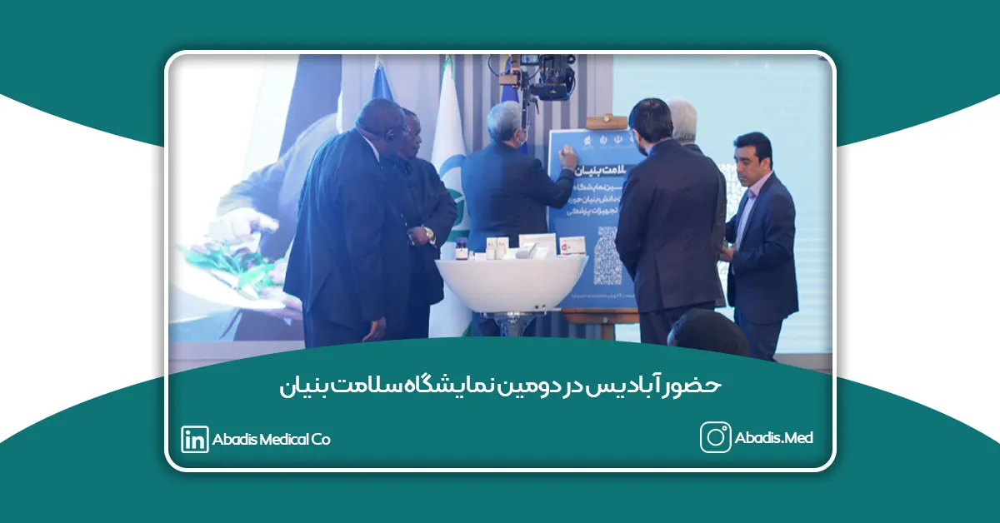
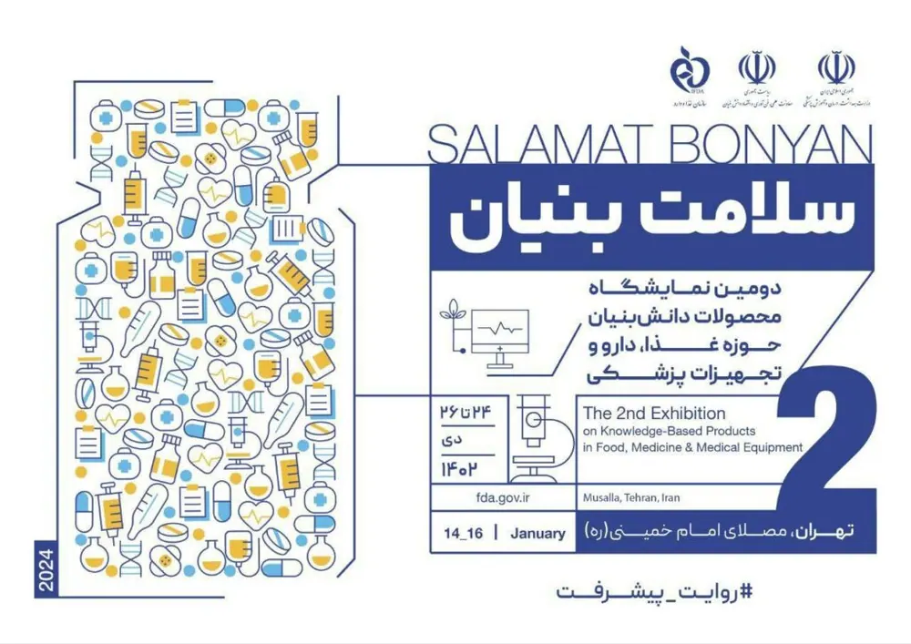

به گزارش خبرگزاری دانشجو،سید حیدر محمدی،رئیس سازمان غذا و دارو در نشست خبری دومین نمایشگاه محصولات دانشبنیان حوزه غذا دارو و تجهیزات پزشکی اظهار داشت: “سال گذشته نمایشگاه سلامت بنیان با هدف به اشتراک گذاشتن داشتهها در حوزه سلامت و دارو با حضور مخاطبان و ذی نفعان برگزار شد و معتقدم در این نمایشگاه توانستیم از شرکتهای دانش بنیان دعوت کنیم و آخرین دستاوردهای آنها را به عرصه ظهور بگذاریم.”
محمدی با بیان اینکه سال گذشته ۹۰ شرکت در این نمایشگاه حضور داشتند گفت: “در مقایسه با نخستین رویداد،مشارکت شرکتهای دانشبنیان در دومین رویداد سلامت محور بیش از ۶۰ درصد افزایش داشته است؛ این استقبال نشان میدهد که هم تعداد شرکتهای فعال در حوزه سلامت افزایش پیدا کرده و هم اینکه تمایل شرکتها جهت حضور در این رویداد بزرگ افزایش پیدا کرده است”.وی در ادامه از حضور ۱۶۶ شرکت در دومین نمایشگاه دانش بنیانهای سلامت از ۲۴ لغایت ۲۶ دیماه ۱۴۰۲ در محل مصلی تهران خبر داد.

شرکت دانش بنیان مخازن طبی آبادیس با افتخار حضور خود را در دومین نمایشگاه سلامت بنیان اعلام میکند؛ و شما سروران گرامی را به بازدید از غرفه آبادیس به شماره C24 در مصلی تهران دعوت می نماید.
زمان برگزاری: ۲۴ الی ۲۶ دی ماه ۱۴۰۲ ساعت ۹ الی ۱۷
مکان برگزاری: تهران،مصلی امام خمینی (ره)،غرفه C21
منتظر حضور سبزتان هستیم.
برای مشاهده گزارش دومین نمایشگاه سلامت بنیان کلیک کنید.